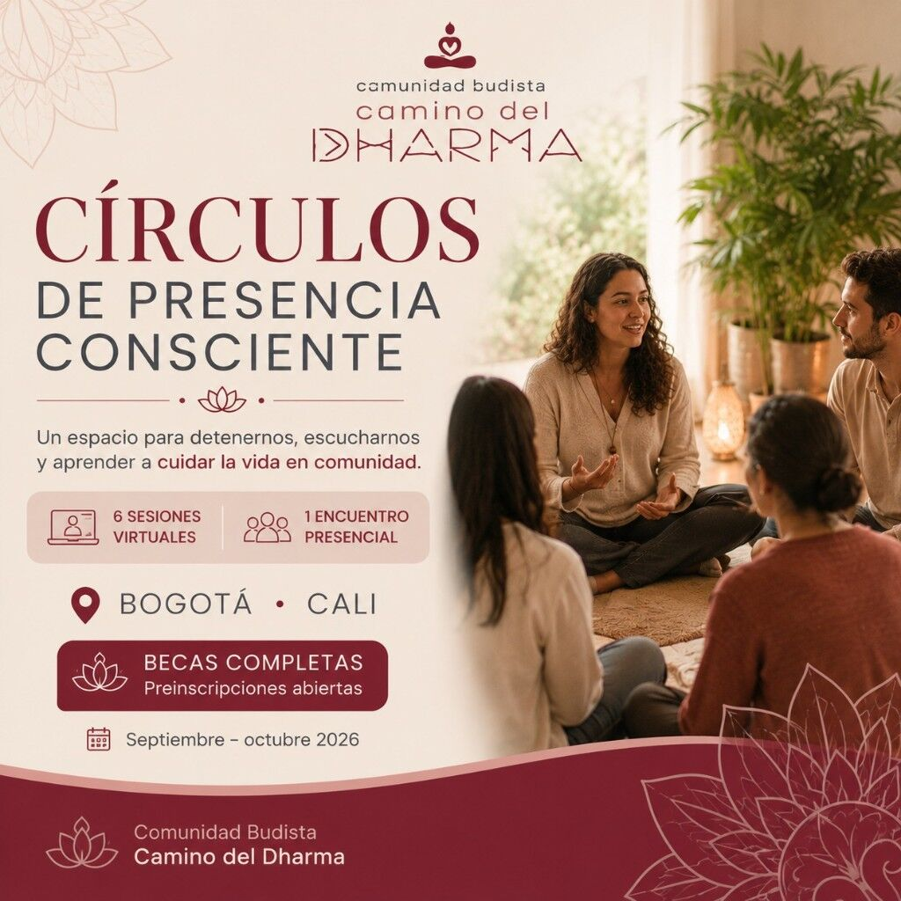

Curso
Círculos de Presencia Consciente

Un espacio para detenernos, escucharnos y aprender a cuidar la vida en comunidad.
Curso híbrido de salud mental preventiva y comunitaria para personas adultas de Bogotá y Cali: una sesión de bienvenida, orientación sobre Google Classroom, seis sesiones virtuales y un encuentro presencial en la ciudad seleccionada. No se necesita experiencia previa en meditación ni pertenecer a una tradición espiritual.
El curso ofrece un número limitado de becas completas. La preinscripción no garantiza automáticamente la asignación de una beca.
Dirigido por el Maestro Zheng Gong.
¿Qué encontrarás en este proceso?
Las actividades integran prácticas de presencia consciente, herramientas psicosociales no clínicas y espacios de escucha. El proceso es progresivo: cada sesión prepara la siguiente e incluye momentos de aprendizaje, práctica y participación.
- Presencia consciente y atención en la vida cotidiana.
- Reconocimiento del estrés y el agotamiento psicosocial.
- Herramientas básicas de regulación emocional.
- Autocompasión como base del cuidado.
- Relaciones y escucha consciente.
- Integración y resiliencia comunitaria.
¿A quién está dirigido?
A personas mayores de 18 años que vivan en Bogotá o Cali y tengan interés en participar en un proceso de bienestar emocional, escucha y fortalecimiento comunitario.
También pueden participar personas de otras ciudades que se comprometan a asistir al encuentro presencial en Bogotá o Cali.
El proceso tiene un enfoque preventivo, formativo y comunitario. No es psicoterapia ni reemplaza la atención médica, psicológica o psiquiátrica cuando esta sea necesaria.
Cronograma
Todas las actividades virtuales se realizarán a las 7:00 p. m., hora de Colombia.
- Sesión virtual de bienvenida: jueves 3 de septiembre de 2026.
- Orientación sobre Google Classroom: jueves 10 de septiembre de 2026.
- Introducción a la Presencia Consciente: martes 15 de septiembre de 2026.
- Estrés y Agotamiento Psicosocial: jueves 17 de septiembre de 2026.
- Regulación Emocional Básica: martes 22 de septiembre de 2026.
- Autocompasión como Base del Cuidado: jueves 24 de septiembre de 2026.
- Relaciones y Escucha Consciente: martes 29 de septiembre de 2026.
- Integración y Resiliencia Comunitaria: jueves 1 de octubre de 2026.
- Encuentro presencial en Bogotá: sábado 17 de octubre de 2026, de 8:00 a. m. a 12:00 m.
- Encuentro presencial en Cali: sábado 24 de octubre de 2026, de 8:00 a. m. a 12:00 m.
Las seis sesiones temáticas virtuales tienen una duración de 90 minutos. Cada participante asistirá únicamente al encuentro presencial correspondiente a la ciudad seleccionada. El lugar será informado oportunamente a las personas admitidas.
Becas completas
Las personas admitidas tendrán acceso sin costo a las sesiones virtuales, el encuentro presencial en su ciudad, la orientación para el uso de Google Classroom, los materiales de formación y la certificación, de acuerdo con los criterios de participación establecidos.
La beca implica un compromiso con el proceso completo. La preinscripción permite manifestar interés, pero no garantiza automáticamente la asignación de un cupo.
¿Cómo participar?
- Realiza tu preinscripción y selecciona la ciudad en la que participarías.
- Participa en la sesión de bienvenida para conocer la metodología, el cronograma y los compromisos del curso.
- Completa tu inscripción definitiva después de la sesión de bienvenida.
- Recibe la confirmación de tu beca y la información para ingresar a Google Classroom.
Preinscribirme (abre en nueva pestaña)
Para conocer el contexto del proyecto y consultar las preguntas frecuentes, puedes leer Círculos de Presencia Consciente en el blog.
Comparto esta invitación de Camino del Dharma: *Curso Círculos de Presencia Consciente* Un espacio para detenernos, escucharnos y aprender a cuidar la vida en comunidad. Bienvenida, orientación, seis sesiones virtuales y un encuentro presencial en Bogotá o Cali. Becas completas. Cupos limitados. 📅 Septiembre – octubre 2026 📍 Bogotá y Cali {{SHARE_URL}} Curso · Camino del Dharma Círculos de Presencia Consciente 📅 sep–oct 2026 · 📍 Bogotá y Cali Curso · Camino del Dharma Círculos de Presencia Consciente Un espacio para detenernos, escucharnos y aprender a cuidar la vida en comunidad. 📅 Septiembre – octubre 2026 📍 Bogotá y Cali